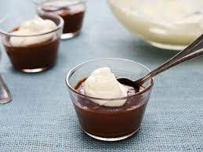

Chocolate Cream Pudding Recipe

Description
Sugar, cornstarch, milk and unsweetened chocolate are
cooked, thickened with egg yolks, cooked some more and
then flavored with butter and vanilla before chilling.
Cook time: 15 mins
Additional time: 15 mins
Total time: 30 mins
Servings: 6
Yield: 6 servings
Ingredients
- 1 cup white sugar
- 2 tablespoons cornstarch
- ¼ teaspoon salt
- 2 cups milk
- 2 (1 ounce) squares unsweetened chocolate,
chopped
- 2 egg yolks
- 2 tablespoons butter
- 2 teaspoons vanilla extract
Steps
- In a medium saucepan over medium heat, combine
sugar, cornstarch and salt.
- Stir in milk and chocolate.
- Cook, stirring constantly, until chocolate melts
and mixture thickens.
- Remove from heat and stir in egg yolks.
- Return to heat and cook 2 minutes more.
- Remove from heat and stir in butter and vanilla.
- Chill before serving.